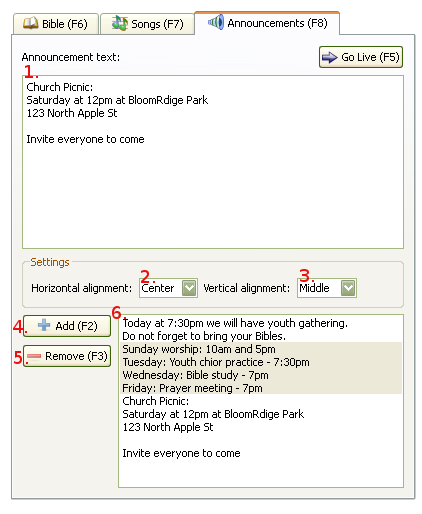

2.4 Showing Announcements
To show an announcement:
Enter announcement text the
text box.

1. Announcement Edit Text Box:
Write announcement text in this box. All text is plain text without
formatting. Text can be multiline and as long as needed.
2. Horizontal Alignment:
Set text alignment to Left of the screen, Center of the screen, or Right of
the screen.
3. Vertical Alignment:
Set text alignment to Top of the screen, Middle of the screen, or Bottom of
the screen.
4. "Add" Button:
Add announcement text that is in text box (1) to playlist (6).
5. "Remove" Button:
Remove selected announcement text from playlist.
6. Announcement Text Playlist:
This playlist hold prepared announcements for further use. As soon as an
item in playlist will be selected, it will change the text in the text
box(1) to what was selected.